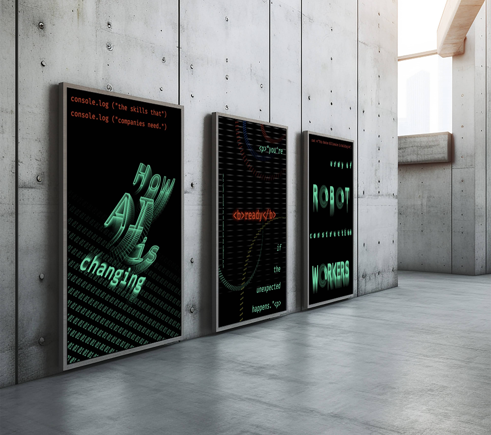
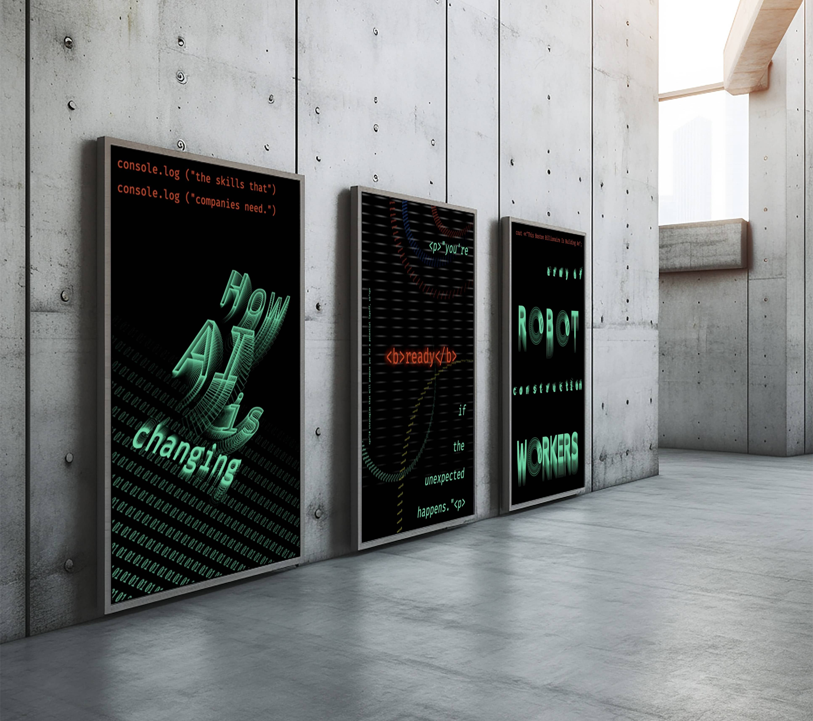

Postmodern Page
Software: Photoshop, Indesign
This spread is part of a collaborative book exploring the history of
typography through chapters. I focused on postmodern design, drawing
inspiration from David Carson and i-jusi. Text is derived from Ulises Carrion's
The New Art of Making Books.
[Artist Book] Lull of the Void
Software: Indesign
Book is both designed and authored by me.
This story follows the short life of Solis, a boy who, for unknown reasons,
has found himself on the moon with the sole task to survive.


Press Release Flyer for Lull of The Void
Software: Illustrator
Poster Series: Consequences of AI
Software: Drawbot (Python Script Coding Software)
This project reinterprets Tweets regarding AI developments from the Forbes Twitter handle. Through each unique composition, I challenged myself to solely utilize type to create imagery that is synonymous with technological themes.
I encoded the text with syntax of code from the HTML, Javascript, and the C++
coding language to further correspond the type design to the concept.
These posters were created to respond to the rising incorporation of AI in the workplace and the consequences this brought to employees. As a creative, I felt that it was important for me to highlight this phenomena of the rise of AI.
.jpg)
.jpg)
 

Is it worth it?
Software: Illustrator